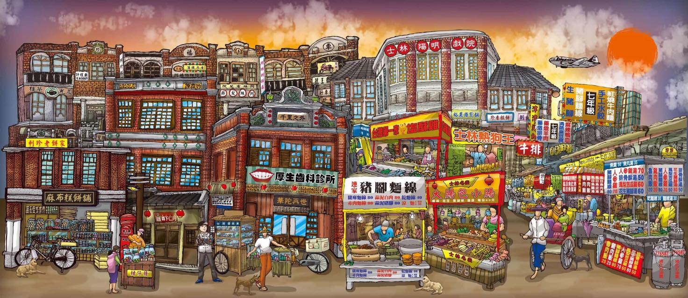

 台灣夜市以當中的台灣小吃聞名，通常在路邊設有小桌子小凳子就地坐下享用，或是打包帶走。小吃的隨著潮流快速的更新，但有些極富特色受大歡迎的小吃，例如蚵仔煎、沙威瑪和臭豆腐隨處可見。有些城市，或是某個夜市因為某種小吃而出名，例如台南的擔仔麵和棺材板。目前台灣夜市大約有300多個分布在不同的城市。根據觀光局於2010年進行的網路票選，臺灣前5名夜市分別為高雄六合夜市、臺北士林夜市、宜蘭羅東夜市、臺南花園夜市及臺中逢甲夜市。